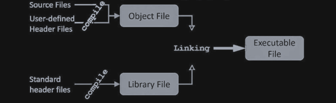
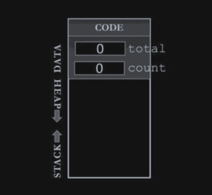
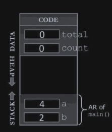
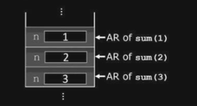
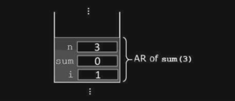
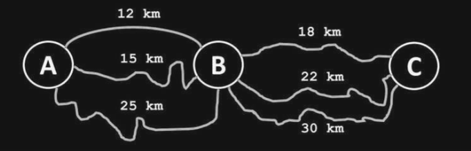
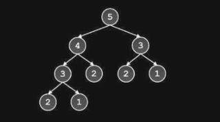
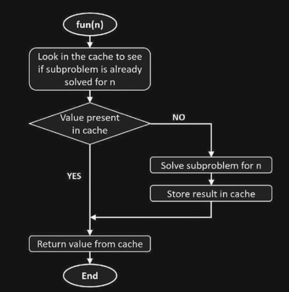

Dynamic Programming
Table of Contents
Introduction
Follows: Roofgarden, T. (2019). Algorithms Illuminated (Part 3): Greedy Algorithms and Dynamic Programming (Illustrated ed.). Soundlikeyourself Publishing, LLC. Channel @ YouTube.com
Objectives
- Understanding functions (from memory perspective).
- Optimal Substructure.
- Overlapping Subproblems.
- Memoization.
- Understanding Dynamic Programming.
- Strategies for DP problems
- Solving DP problems.
Memory And Functions
Consider the following C code:
int g = 5; int main() { static int a; int b; int *p; p = (int*) malloc (sizeof(int)); *p = 10; }
The process of compiling this file should look like this using a standard C compiler:

After this we get the standard executable file. Once you run it, first it is loaded into the random access memory -> process address space, which includes memory segmentation. It has the following segments:
Code Segment
- Contains the machine code of the executable file.
- Read-Only segment.
Data Segment
- Contains all global and static data variable (henceforward load-time variables).
- Loaded before
mainfunction is called. - It has also two data areas:
- Initialized data variables: includes all pre-initialized (e.g
static int i = 8)- uninitialized data variable: which is going to be initialized by zero.
- Initialized data variables: includes all pre-initialized (e.g
Stack Segment
- Contains an Activation Records of all active functions
void function_II(); void functions_I(); void functions_II(); int main() { fucntion_I(); } void functions_I() { function_II(); } void functions_II() { }
When the program is executed, main() is the only active function, when main call
function_I, both main() and function_I are active, and so on when it calls
function_II they are all active and their activation records are in stack.

When function_II returns, its activation record is popped from the stack, and the
execution is back in function_I, and so on with function_II.
- The size of the stack keeps change as the program is running and calling new functions.
SP registerKeeps track of the top of the stack.
Heap Segment
- This is where new memory is allocated (using either
newin C++ or C'smalloc()), it's also called dynamic memory and run-time memory.
Running
Consider the following code:
#include <stdio.h> int total; int square(int x) { return x*x; } int squareOfsum(int x, int y) { static int count = 0; count++; printf("Function is called %d times", count); return square(x+y); } int main() { int a =4, b =2; total = squareOfsum(a,b); printf("Square of Sum = %d", total); }
Function is called 1 timesSquare of Sum = 36
After running the executable file of this program and loading it into your RAM, the main function is not called yet and the memory looks like this:

The load variables are loaded in the Data Segment area. Then after main() functions is
called, the memory looks as follows:

When a function is called:
- State (register values, Instruction Pointer value, etc.) of calling function is saved") in the memory.
- Activation record of called function is created and pushed on the top of Stack. Local variables of called function are allocated memory inside the AR.
- Instruction pointer (IP register) moves to the first executable instruction of called function.
- Execution of the called function begins.
Similarly when the called function returns back (to the calling function), following work is done:
- Return value of the function is stored in some register.
- AR of called function is popped from the memory (Stack size is reduced and freed memory gets added to the free pool, which can be used by either the stack or heap).
- State of the calling function is restored back to what it was before the function call (Point-1 in function call process above).
- Instruction pointer moves back to the instruction where it was before calling the
function and execution of calling function begins from the point at which it was paused".
- Value returned from called function is replaced at the point of call in calling
function.
(This can be optimized using inline functions in some compilers)
Conclusion
Function call is a lot of overhead in both terms of time and memory. This is why macros using is ubiquitous in C.
#include <iostream> #incldue <vector> void it(){ vector<int>i = {1,2,3,4,5,6,7}; // for (int i = 0 ; i < i.size(); i++ ) //{ // do something //} int size=i.size(); for (int i = 0 ; i < size; i++ ) { // do something } }
Consider the following recursive and iterative solutions to calculate the factorial of n:
int sum(int n) { int sum =0; for (int i = 1; i <= n; i++) sum +=i; return sum; }
int sum(int n) { if (n==1) return 1; else return n + (sum n -1); }
for the recursive solution, when we call it for 3 as sum(3); It will call sum(2); which
will in-turn call sum(1).
At this point, the memory stack will have three activation records of function sum, each of them having a local variable n:

In the iterative solution, there is only one function call to sum(3) and three local
variables:

Optimal Substructure
Optimal substructure means, that optimal solution to a problem of size n (having n elements) is based on an optimal solution to the same problem of smaller size (less than n elements). i.e while building the solution for a problem of size n, define it in terms of similar problems of smaller size, say, k (k < n). We find optimal solutions of less elements and combine the solutions to get final result.
Consider finding the shortest path for traveling between two cities by car. A person want to drive from city A to city C, city B lies in between the two cities.

The shortest path of going from A to C (30 km) will involve both, taking the shortest path from A to B and shortest path from B to C.
Overlapping Subproblems
Here is a new kind of problems, in which subproblems are not solved just once (not like singular recursion). Consider the example of finding the \(n^{th}\) from a Fibonacci series like: [1, 2, 3, 5, 8, 13, 12 ..].
Fibonacci(1) = Fibonacci(2) = 1 For \(n=1, \text{\ } n=2\) Fibonacci(n) = Fibonacci (n-1) + Fibonacci (n-2). For \(n>2\)
The simplest algorithm to compute \(n^{th}\) term of Fibonacci is a direct translation of the mathematical definition using recursion function:
int fib(int n) { if(n==1 || n==2) return 1; else return fib(n-1) + fib(n-2); }
This is an equation for exponential time. The reason why it is taking exponential time for such a simple algorithm is because it is solving the subproblems (computing kth term, k<n) multiple times.

The function fib(n), where n=5, call itself twice with n=4 and n=3. Function with n=4 will in turn call fib function twice with n=3 and n=2. Note that fib (3) is called twice, from fib(4) and fib (5) respectively (see Picture 4.2). In fact fib (2) is called three times.
The following code shows non-recursive solution that uses the first two terms to compute the third one:
int fib(int n) { int a = 1, b = 1, c, cnt 3; if (n == 1 || n == 2) return 1; for (cnt = 3; cnt <= n; cnt++) { c = a + b; a = b; b = c; } return ci }
This is \(O(n)\) solution.
| n | 2 | 3 | 4 | 5 | 10 | 20 | 40 |
|---|---|---|---|---|---|---|---|
| Recursive | 1 | 3 | 5 | 9 | 109 | 13529 | 204668309 |
| Iterative | 1 | 1 | 1 | 1 | 1 | 1 | 1 |
Memoization
Consider the Climbing Stairs problem.
In memoization we store the solution of a subproblems in some sort of a cache when it is solved for the first time. When the same subproblem is encountered again, then the problem is not solved from scratch, rather, it's already solved result is returned from the cache.
Recursion itself is bad in terms of execution time and memory. In the Fibonacci problem, the problem gets worse when we compute value of fib(x) from scratch again even when it was computed earlier (overlapping subproblems). When fib (10) is calculated for the first time we can just remember the result and store it a cache. Next time when a call is made for fib(10) we just look into the cache and return the stored result in 0(1) time rather than making 109 recursive calls all over again.
This approach is called Memoization. In memoization we store the solution of a subproblems in some sort of a cache when it is solved for the first time. When the same subproblem is encountered again, then the problem is not solved from scratch, rather, it's already solved result is returned from the cache

Consider computing nth Fibonacci term again, let us add an integer array, memo of size n that will act as cache to store result of subproblems (N = max value of n that need to be computed).
#define MAX 100 int memo[MAX]; int fib(int n) { if(n==1 || n == 2) memo[n] = 1; else memo[n] = fib(n-1)+fib(n-2); return memo[n]; } // O(N)
| n | 2 | 3 | 4 | 5 | 10 | 20 | 40 |
|---|---|---|---|---|---|---|---|
| Recursive | 1 | 3 | 5 | 9 | 109 | 13529 | 204668309 |
| Iterative | 1 | 1 | 1 | 1 | 1 | 1 | 1 |
| Memoization | 1 | 3 | 5 | 7 | 17 | 37 | 77 |
Dynamic Programming
Dynamic programming is "A method for solving a complex problem by breaking it down into a collection of simpler subproblems, solving each of those subproblems just once, and storing their solutions - ideally, using a memory- based data structure.”
By this definition, memoization is also dynamic programming. Some authors in fact use the term “Memoized Dynamic Programming' or 'Top-Down dynamic programming for Memoization and they use "Bottom-up dynamic programming' to describe what we are calling Dynamic Programming here. We use the terms 'Memoization' and 'Dynamic Programming, to refer to top-down and bottom-up approaches of problem solving where a subproblem is solved only once.
In other words, dynamic programming unroll the recursion. Consider the following dynamic solution to the Fibonacci problem:
int fib (int n) { int arr[100 /* MAX */]; arr[1] = 1, arr [2] = 1; for (int i =3; i <= n; i++) { arr[i] = arr [i-1] + arr[i-2]; } }